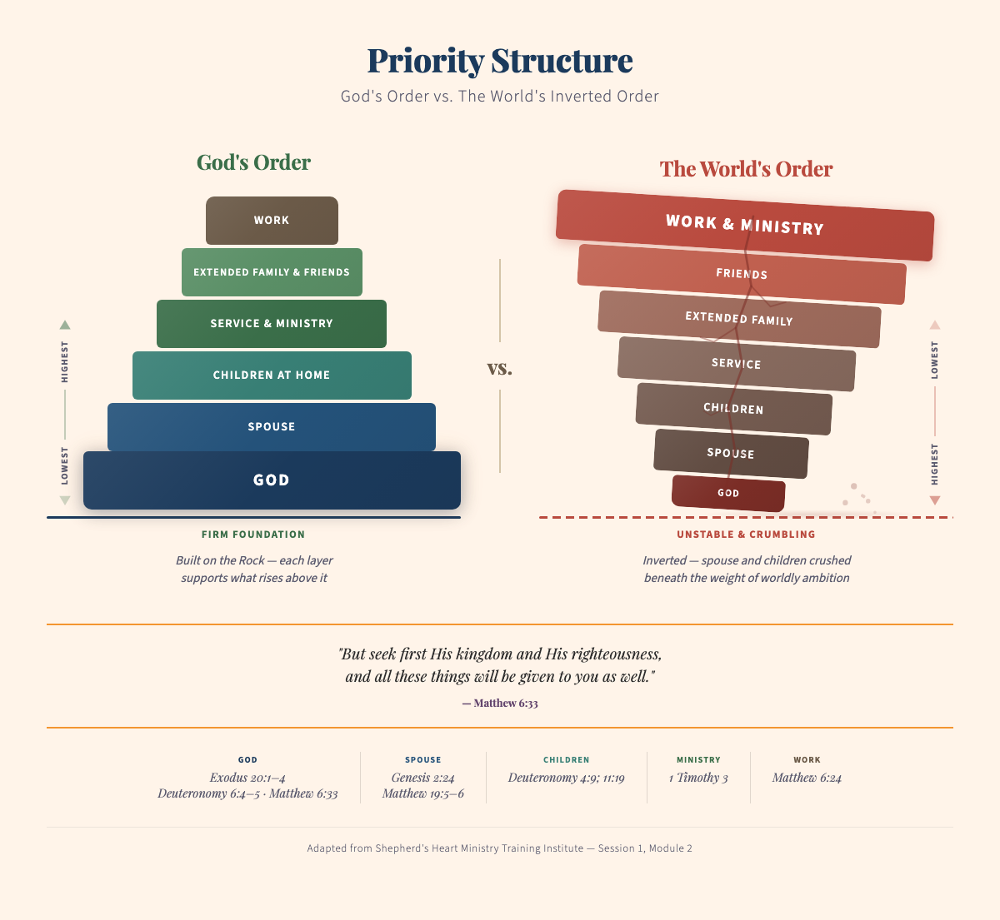

Most of what strains a marriage (the money, the calendar, a slow drift apart) are symptoms. Underneath them sits a question of order. Get the order right and the relationships downstream begin to work; get it backward and you spend your life fighting brush fires while the real one keeps burning.
It is a foundation, not a ranking.
Each layer holds up the one above it. Filled by God, you overflow into your marriage; a steady marriage becomes a safe place for your kids to stand; and from that fullness you serve and work without running on empty. Nothing higher holds when the layer beneath it is cracked.
Putting your spouse ahead of your kids is not loving them less.
It is how you love them well. A solid marriage is the safety nest your children actually rest in; kids feel steady when the two people holding their world are steady with each other.
You cannot just wedge someone back in.
When the calendar is already full and your marriage has slipped down the stack, the instinct is to shove things back and squeeze your spouse into the gap. Take all the pieces off the table instead: God down first, then your marriage, then build the rest of life around them. It will cost you something real, and if it costs nothing, your marriage quietly stays last.
Notice where your heart is tied.
You can be home on the couch, phone in hand, mind still back at work: a rubber band that snaps you away the moment you are free. Your body goes where the calendar sends it; your heart stays where your treasure is.
The gap is rarely knowing; it is living.
Most of us nod at all of this. The honest question is whether we believe it enough to give something up for it. Priorities drift on their own, so keeping them in order is quiet, ongoing work you do together, and it is worth every bit.

One of our teachers spent years telling his children their mother came first, and it wounded them, until he found different words: it is not that she matters more than you; it is that the two of us have to be steady enough to build a safe place for you to be. That reframe changed everything.
This teaching is adapted from the Shepherd's Heart Ministry Training Institute (Session 1, Module 2), tools forged over decades of marriage ministry. We are grateful to carry them to couples preventatively, before the storms come.